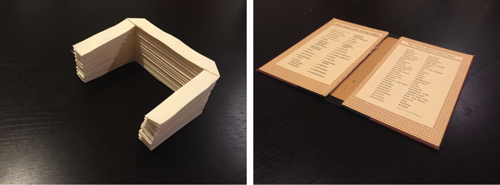
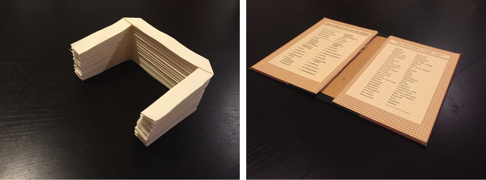

Twitter Bots
A twitter bot that tells the user how many sweaters to wear

This project was inspired after reading Don Norman's Design of Everyday Things. Norman told two stories that sparked this project. The first story is understanding what people actually want- a quarter inch drill or do they want to hang shelves. The second story is about providing infomation that is useful and actionable to the user-- he used the example of temperature metrics. Read the write up where I discuss Norman's stories and how I started learning javascript.
A twitter bot that checks and corrects the spelling of Donald Trump

I was exploring Microsoft's Cognitive Services and at the same time noticed Donald Trump often had misspellings in his tweets. In the essence of practicing code I deployed one of Microsoft's simpler tools to check @realDonaldTrumps spelling. You can check out some of the bot's better moments here.


 
